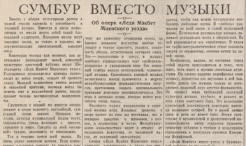

On Walter Benjamin's "The Storyteller"
Keynote lecture of the first Congress of the International Walter Benjamin Association, Amsterdam, July 1997. Published as “Revolutionary Time: The Vanguard and the Avant-Garde” in Benjamin Studies, Studien 1, ed. Helga Geyer-Ryan (Amsterdam/New York: Rodopi) 2002.
I am not the first speaker to note the irony of our being assembled here as academics at an International Walter Benjamin Congress. But to paraphrase the Great Thinker himself: granted there are Benjamin conferences, still, there is a great difference between a good Benjamin conference and a bad one (his example was a movie version of Faust (V 573)). This has been a particularly good conference, thanks to the tremendous positive energy that the directors of the International Walter Benjamin Association have generated. As the last speaker in the plenary sessions, let me take the opportunity to thank them for us all.
But one has to wonder. Is not an International Walter Benjamin Conference, of, by, and for the academy that rejected him, in order to celebrate a Great Thinker who relentlessly disparaged the whole idea of the cult of genius, facilitated by the global forces of not so much late as perpetually lingering capitalism — forces that he held responsible for holding back the human potential of technology — is not all of this an exceedingly contradictory phenomenon? And if so, can one, is one at least obliged to try to tease out of the contradictions a dialectical understanding of what it is, indeed, that we are doing here? — assuming we know what ‘dialectical’ means, that is, and after writing two books with the word ‘dialectics’ in the title, I am not at all sure that I do.
One aspect — let us call it dialectical — in the theory of the Frankfurt School in general and of Walter Benjamin in particular that marks this century and continues to fascinate, now perhaps more so than ever, is their combining of radical, social-revolutionary politics with an absolute distrust of “history” as progress — combining, that is, two positions previously thought of in opposition: traditionally, it was the socialist left that believed in historical progress, while the right, the social conservatives, were the nostalgic critics of history’s course. But in this century, revolutionary politics and historical pessimism have been brought together because intellectual integrity would not allow otherwise. One cannot have lived through the twentieth century, which is bumping and grinding to a close as we speak, and still maintain an unshaken belief, either in capitalism as the answer to the prayers of the poor or in history as the realization of reason. The counter-examples are too numerous on every continent of the globe. Among every ethnic group and within every world civilization, the human atrocities committed have been, and continue to be barbaric whether they are carried out by axe and machete or by ever-increasing technological sophistication. Meanwhile, as the grey background of these political events, the economic gap between rich and poor not only persists; it has become an abyss, a situation for which the new global organization of capitalism — unchallenged as the winner in history — no longer even tries to apologize. So if historical “progress” delivers capitalism, and capitalism cannot deliver a reasonable organization of society, then one is led inexorably to the Benjaminian, or Frankfurt School position.
Inexorably. I am purposely rejecting political pluralism here. (As a college professor of mine once said — she was, not incidentally, a socialist emigrée from from Nazi Germany — “Liberals are so open-minded their brains fall out.”) So let me repeat: intellectual integrity demands our political engagement in both a radical criticism of capitalism and a radical criticism of historical progress. This can be done from a plurality of social positions — constructions of race, sexuality, ethnicity, postcoloniality and the like — but it cannot be done comfortably. If we are too comfortable, either as established Benjaminian academics, globe-trotting gadflies, or as would-be Benjaminian academics, globe-trotting groupies, we are part of the problem. I am referring to intellectual discomfort more than financial discomfort, although the two appear together often enough. I am also speaking particularly to the younger Benjaminians in the audience who find themselves in continuous discomfort, attracted (let us hope) to Walter Benjamin’s writings because of their intellectual radicality and political-existential integrity, and yet scrambling frantically for those few jobs in academia which seem saved for the most intellectually opportunistic and cautious of applicants. This is true, particularly, in the United States, where the university system, which takes its lead from the privately funded institutions, is adopting every “good” business practice of today’s corporate world: downsizing the teaching staff and increasing their load, closing profit-draining, “inefficient” departments, replacing staff workers by electronic machines, raising the price to students-as-consumers, and, the most radical change, threatening to eliminate tenure so that today’s autonomous professors can be replaced with the young, existentially vulnerable Ph.Ds at far lower costs. If this corporate logic continues unchallenged, the situation will become intolerable. The compromises of free-thinking intellectual life within the shrinking academy will become too great. Something will snap. Who will benefit from that situation is not guaranteed. It depends on what we intellectuals do collectively — one might say, as a class. The name for collective class action used to be socialist. The word is due for a rehabilitation. Against those who dismiss socialist politics as a relic of the recent past, let me make a dialectical, indeed Hegelian, epistemological point: forms of socialism will continue to be reinvented because the logic of capitalism demands it. The distorted social logic of capitalism makes the positing of socialist alternatives inevitable because human reason cannot be satisfied without them.
The challenge for those of us already safely inside the academy is the self-imposed, dialectical demand that we pass on to the next generation a radical tradition of thought. The demand is dialectical because of the apparent contradiction: how can the passing on of a tradition be a radical act? The answer to that question necessitates nothing less than a philosophy of history. And all of us in the academy who read texts of the past, no matter what our formal disciplines of study, are historians, angels of history in at least the positional sense. Facing backward, we move toward the future.
What makes Benjamin’s philosophy of history so helpful for this task is that it refuses the binaries of historicism and universalism. Meaning in history is neither von Ranke’s wie es eigentlich gewesen ist (“how it actually was”), nor is it a changeless, transcendental truth accessible to all times.1 Historical meaning is transient, depending not so much on the past as on the present, on the real state of affairs. Hence history cannot be approached as an academic exercise, as if it concerned a race of humanoids living once-upon-a-time on Mars. We are in history, and its time is not over. We make history in both temporal directions, past and present. What we do, or do not do, creates the present; what we know, or do not know, constructs the past. These two tasks are inextricably connected in that how we construct the past determines how we understand the present course. To use Benjamin’s metaphor, the wind of world history blows from the past; our words are sails; the way they are set determines them as concepts (V 591-92, N9,6, N9,8). History’s causality is nachträglich, deferred action, rather than sequential steps on a temporal continuum. We produce that causality in the present by the way we give meaning to past events, a situation that entails the enormous responsibility. It matters deeply what we see in the past and how we describe it. At the same time, since the potential constructions of history are near-infinite — and since the sea of the present is unbounded — it is impossible for us to know in advance the right way to go about it. Indeed, perhaps our responsibility is always to be looking for another way, constantly undermining not the facts of history, but the way these facts are connected, constantly altering the constellations in which they are able to appear.
Constellations. This word is another of Benjamin’s metaphors, connecting his early, metaphysical writings to his late, materialist texts. It figures centrally in his theory of truth, and for me it has been a very productive idea.If we understand the stars as empirical data — facts and fragments of the past — virtually limitless in number, virtually timeless in their being, then our scientific task as academics is to discover them (I am still a believer in archival work as such), while our philosophical and hence political task (like Benjamin, I equate the terms) is to connect these fragments and facts in figures that are legible in the present, producing “constellations” that are variants of truth (it is the archival work that allows us still to use this word). In an ideal society, Benjamin tells us, all the stars would be included, and every constellation legible. But in our own, this is not the case. Power distorts the vision of the heavens, imposing its heavy telescopes on certain areas so that their importance is magnified, obstructing others so overbearingly that they are not visible at all. Such power is not only imposed by the state. It is lodged in the very structure of our disciplines — which are themselves magnifying apparatuses, encouraging the insertion of new discoveries into their already charted constellations of discourse, shifting their focus only slowly to adapt to the tides of the times. We as intellectuals practice critical agency when we refuse to be bound by their ruling astrological signs. But we ignore the facts (the stars) and we ignore the trends of our own times at our peril — all the more so if we want to set our sails against the current. Again in terms of Benjamin’s approach, it is not enough to produce other constellations of women’s history, black history or the like. The facts these studies unearth are meant to explode the cultural continuum, not to replace it with a new one.2 They are not an end in themselves but, rather, stars to steer by in our own time, leaving the set of the sails and even the direction of the voyage still undisclosed.
In the spirit of this idea, that fragments unearthed from the past enter into new constellations with the present, I want to suggest today how the changed view of the heavens of history that has opened up with the end of the Cold War might allow us to draw different lines of connection, relevant both to Benjamin’s own intellectual biography and to the biography, if we may call it that, of the left-revolutionary movement itself.
Traditionally in the established disciplines, we have been taught to understand Walter Benjamin in the context of historical developments in Western Europe: within European Marxism, French Surrealism, Weimar culture, or German-Jewish intellectual thought. My own work has been part of that tradition. But Benjamin himself did not experience his historical context in this limited Cold War way. For him, at least after he came to know Asja Lacis in 1924, the burning intellectual issues were forged by left-wing political practice regardless of ethnic or geographic location.3 And that practice was taking place most intensely, if problematically, in the Soviet Union. I cannot accept Gershom Scholem’s insistence that Benjamin “lost all his illusions” about Soviet socialism in the course of his trip to Moscow in the winter of 1926-27.4 (Let us remember that he did make that trip, whereas despite repeated promises to Scholem, he never went to Jerusalem, and despite the wistful title of a late work, Central Park, he never followed the Frankfurt School to New York City.) Benjamin’s writings, contra Scholem, give evidence of the continued significance of Soviet socialism for his thought. In the mid-1930s, that is, a decade after his Moscow sojourn, Benjamin’s work shows an awareness of the critical discussions that had been taking place among Soviet artists for more than a decade. This is not only true of the short speech, The Author as Producer, delivered in 1934 to the Institute for Research on Fascism in Paris, which was a Communist organization.5 It is equally the case with that much-cited, much-abused document, written in 1935 and first published in 1936, which he himself proudly proclaimed as the “materialist theory of art” (VI 814), but which is still read, in the United States at least, as a thoroughly depoliticized defense of the culture industry. I am speaking of course of the essay Das Kunstwerk im Zeitalter seiner technischen Reproduzierbarkeit. In this essay and again even more explicitly in the 1935 exposé to the Passagen-Werk, Benjamin describes the ways new technologies have enabled the emancipation from art of “creative forms”6 a description that resonates unmistakably with the Bolshevik avant-garde’s affirmation of the technologically produced “trend toward the liquidation of art as a separate discipline.”7 Benjamin’s privileging of the cognitive potential of cinema as a mode of epistemological inquiry finds its exemplification in Dziga Vertov’s experimental cinema, Man With a Movie Camera (1929).8 Benjamin’s essay on the Work of Art takes a positive position in regard to what in the mid-1920s the Russian avant-garde called “production art,” that is, art entering, via industrial production, into everyday life — whereas his essay on The Author as Producer borrows the idea of the “artist-engineer,” a term coined by Russian Constructivists, in order to describe his own call for a “refunctioning” of the technical apparatuses of cultural production.9 When in these essays Benjamin rejects the cult of individual genius and heralds the decline of the division of labor between cultural producers and the audience of consumers, he echoes the position of Proletkult, the proletarian cultural organizations of the 1920s that, in advocating “creative amateurism,” sided against the cultural elitism of the Party.
Benjamin shared many interests with the Soviet avant-garde, from his appreciation of Charles Fourier, who was read widely in Russia after the Revolution,10 to his theories of mimesis and innervation, which resonate intriguingly with discussions of biorhythmics and biomechanics among Soviet theater and film directions like Meyerhold and Eisenstein.11 Even an idea so seemingly eccentric as Benjamin’s anthropomorphic theory of objects, which so horrified Bertolt Brecht, that things look at you and you return their gaze, is strikingly similar to the avant-garde’s utopian speculations on the “socialist object,” which was to replace capitalist commodities.12 Rodchenko wrote home to Moscow in the summer of 1925 from Paris (where he was attending l’Exposition internationale des art décorativs)13 of a kind of socialist aura whereby “[t]hings become comprehending, become friends and comrades of the person, and the person learns how to laugh and be happy and converse with things.”14
Of course, none of Benjamin’s texts, not the Artwork essay and not even The Author as Producer, acquiesces to socialist realism as it was being spelled out in the Soviet Union and disseminated internationally by the Comintern. As was true already in 1926 when he visited Moscow, Benjamin never equated socialist artistic practice with the official line of the Communist party. But neither did Soviet artists in 1926. Nor did they in 1936, for that matter, although the punishment for not doing so was becoming, in certain cases, frightfully severe. The extraordinary contribution of recent archival work by Western and Soviet historians alike has been to correct the West’s simplistic Cold War understanding of Communist art as dictated dogmatically from the political leadership at the top. Indeed, as scholars like Franco Borsi have made evident, those elements formerly identified as hallmarks of “totalitarian art” — monumentalism, neoclassicism, order through repetition — can be found generally in the European works of the 1930s, in democracies as well as dictatorships.15 Whereas the complex interrelations in the Soviet Union between culture and politics that new research has revealed (the excellent two-volume account by Brandon Taylor,16 for example, or the magnificently varied exhibition, including the written contributions to the catalog, The Great Utopia, which opened at the Guggenheim in New York in 199217) changes the view of the past for us indisputably. Whether we have been admirers of the Bolshevik avant-garde or not, we are forced to abandon any one-sided view of culture and politics within really existing socialism. This may make possible the redemption of at least some of the suffering of the past, in the sense that the endeavors made by the revolutionary generation of cultural producers in the Soviet Union can be rescued as meaningful for our own time. The multiplicity of debates and practices, not only during the first Heroic Years (1917-22), but throughout the twenties and even into the thirties, provide numerous productive possibilities for constructing new legacies for present practices, indicating that Benjamin’s call for the “politicization of art,” far from being bankrupt, has an “after-history” the potential riches of which contemporary artists today have not yet even begun to explore. This exploration is to be encouraged because much of so-called “political” art today is pitifully uninspired in comparison with the earlier work of the Soviet avant-garde.
In this context, let me say one critical word about the influential work of Boris Groys, a Russain emigré now professor in West Germany at the Universität Münster. His 1988 book Gesammtkunstwerk Stalin produced, it must be granted, a totally new “constellation” out of the facts of the past by arguing that, ironically and despite Stalin’s persecution of individual avant-garde artists, it was Stalin himself who implemented their utopian social project of creating a totally transformed, socialist society and a new man to inhabit it, thereby completing the task that the avant-garde artists had enthusiastically (and proto-totalitarianistically) begun.18 The problem with Groy’s constellation is that it is itself an example of the totalitarian logic it deplores. By arguing that all cows are grey — that all social-utopian cultural projects are inherently totalitarian — it dismisses the entire tradition of politicized art, closing down debate. The exciting panoply of new material that empirical research is discovering is allowed no space in his account. The facts, the stars themselves, cannot challenge the postmodern cynicism that fuels his incendiary critique. While he proceeds to explode old myths, the illuminating potential of new facts is lost in the glare.
On the other hand, recent research makes it clear that the intellectuals with whom Benjamin was in closest contact during his visit to Moscow were of a very particular stripe; they were hardly the cultural-political “good guys” that some scholarly accounts of Benjamin imply. Contrary to earlier prescriptions in the West, the hardline position taken in the late 1920s in the Soviet Union against depoliticizing, non-class-based tendencies in culture did not come from the top; it was not dictated by Stalin. Rather, the mood of cultural intolerance was fanned by the artists themselves in organizations like VAPP, of which Benjamin’s closest Moscow contact, Bernhard Reich, was a member, and the club of which Benjamin visited almost daily during his visit. VAPP (Vserossiiskaya Assotsiatsiya Proletariskikh Pisatelei, or, All-Russian Association of Proletarian Writers), founded in 1920, became more and more extremist in the atmosphere of 1926-27, fighting in the name of the proletarian class for a monopoly of the cultural voice and silencing the opposition. VAPP was the “main protagonist of the hard line in literature,” according the the revisionist historian Sheila Fitzpatrick, who describes it as “young, brash, aggressive, self-consciously Communist, and ‘proletarian’ in the sense that it was hostile to the old literary intelligentsia.”19 (Benjamin was himself only in his mid-thirties at the time.) Theirs was a purist position on revolutionary culture that Stalin did not share, although, as Fitzpatrick has shown, he made opportunistic use of its energy.
What I am saying is that the Communists with whom Benjamin was most closely associated were radicals, not liberals; they believed that only certain tendencies in the arts were progressive, and they did not argue for freedom of speech. And in this context, Benjamin’s philosophy of history becomes all the more meaningful. Because the fact is that most of the avant-garde artists had submitted to the vanguard notion of historical time in the course of the 1920s (Malevich may have been an interesting exception),20 that is, they had accepted a conflation of avant-garde and vanguard temporalities — a conflation that was not justified, since the temporality of the avant-garde is fundamentally anarchist, a position with which Lenin only briefly (until April 1918) allowed the Party to be aligned. Benjamin, on the other hand, never accepted the vanguardist conception of time. As a result, intolerance of cultural pluralism could not fall back on facile rhetoric of “advanced” or “backward” as judgmental condemnations. These had to be argued out of phenomenological experience of the material itself, given the actual state of affairs — which, by the last decade of Benjamin’s life, was the “state of emergency” of fascism.
The point about different temporalities is important, and I want to return to it. But first, let me give one further philological example to justify considering the debates in the Soviet Union of long-term significance for Benjamin’s works.21 It has to do with Benjamin’s 1936 essay, The Storyteller. As is so often the case with academic readings of Benjamin, very few people think to inquire about the particular story-teller whom Benjamin discusses in this essay, which develops his theory of the end of the era of story-telling. It was Nikolai Leskov, a 19th-century Russian writer and a contemporary of Dostoyevsky, whose stories were about traditional Russia from the perspective of someone who had left that provincial background behind.22 And even if commentators on Benjamin decide to read Leskov’s work, they will still not understand why Benjamin deals with this storyteller of all possible ones, as the ur-example of a form of cultural production that he considered no longer possible historically. But Leskov was, as the Germans say, aktuell in contemporary debates.23 And although Benjamin confessed to having “gar keine Lust” (no desire at all) (II 1277) to work on the piece because he was preoccupied with with the Passagen-Werk, he accepted a commission to write The Storyteller for the journal Orient and Okzident in March 1936 — precisely when Leskov’s name had become involved in a conflict between hard-line Communist artists and the Soviet leadership, as a consequence of the fact that the Soviet composer, Dmitri Shostakovich, who identified with the militant revolutionary avant-garde, had put one of Leskov’s stories to music.
The story (and title of Shostakovich’s opera), Lady Macbeth of the Mtsensk District, is itself a fascinating one. The protagonist, Katerina Izmailova, is a typical 19th-century heroine in one regard: she falls passionately in love, and her life is consumed by it. But she is totally un-typical in that, rather than simply dying, as was de rigeur in 19th-century fiction, this woman like her Renaissance namesake kills for love. She kills her father-in-law when he discovers she has a lover (her husband’s servant). She bashes her husband to death with a candlestick and smothers her nephew-in-law (with her lover’s help). She kills her lover’s new girlfriend (without it). And only then, wrestling her fourth victim into the icy Volga, does she fall herself into a watery grave. But it was not the sensational theme of Leskov’s story that caused the greatest controversy in the 1930s. Rather it was Shostakovich’s modernist, post-narrative rendition of it.
Met Opera production of Shostakovich’s Lady Macbeth of Mtsensk.
Katerina and Sergei in the Met Opera production.
When the opera first opened in Leningrad in 1934, it was widely acclaimed, heralded by the official press for its musical and theatrical innovations. Sergei Eisenstein used the piece in the classroom as exemplary of how to build an entire productions mise en scène.24 But in January 1936 Stalin and Molotov attended a performance in Moscow by the Bolshoi Theater’s Second Company. Two days later the opera was vehemently denounced in Pravda as an avant-garde monstrosity, “a mess instead of music.”25 Shostakovich himself was stunned and shaken. The incident received international publicity, as the opera had also played in Europe and the United States.26 In this context, the impact of Benjamin’s argument in The Storyteller (commissioned two months after the Pravda denunciation) was to defend a contemporary Communist artist against the anti-modernist political criticisms of the leaders of the Soviet state. This is an altogether different agenda than lamenting the passing of a pre-modern literary form, which is the usual interpretation given by Benjamin scholars of The Storyteller.
English National Opera production of Lady Macbeth of Mtsensk.

Article in Pravda.
But to end the discussion here would be to employ historicism to criticize contemporary interpretations, and I have already said that this alternative is in itself inadequate. Moreover, we have no evidence that it was Benjamin’s intent to enter the Shostakovich controversy with the essay, nor do we need it — not if we are interested in truth, which, as Benjamin said, is precisely not intentional. “Truth,” he wrote in the Trauerspiel introduction, “is the death of intention.”27 What counts more than the question of whether Benjamin understood his interventions in the context of Soviet controversies is the fact that it might be productive for us to do so. And in suggesting this constellation, I want to return, as promised, to the question of temporality and the philosophy of history.
It was Peter Osborne whose recent book The Politics of Time made me think philosophically about the politics implicated in various concepts of temporality, particularly the section of his book that criticizes my own reading of Benjamin explicitly.28 I think he is correct in describing Benjamin’s concept of revolutionary time as “phenomenally lived” rupture, the interruption of daily life, hence fundamentally different from the cosmological temporality that marks the Hegelian-Marxian conception — which was also Lenin’s, of course, and that of the vanguard Party. But it is problematic to equate, as Osborne does, Benjamin’s conception of time with the temporality of the avant-garde — problematic because this theoretical distinction ignores real history, and as a Marxist, even a Marxist philosopher, Osborne ought not have done that. Osborne writes that the Benjaminian experience of the “now” (“now-being” he calls it in a dubiously Heideggerian move) is “a form of avant-garde experience. For the avant-garde is not that which is historically most advanced in the sense that (…) it has the most history behind it.”29
But alas, this is precisely how the avant-garde understood itself. Let us recall briefly: The term “avant-garde” came into use in France in the mid-19th century.30 At that time it applied both to cultural and political radicalism as both endorsed, in the spirit of Saint-Simonianism, the idea of history as progress. At the end of the century, in the climate of artistic modernism that was centered in bourgeois Paris (where many of the Russian avant-garde artists lived before the Revolution), the “avant-garde” took on a more specifically cultural meaning. Although most (but not all) of its members would have considered themselves politically on the “left,” the term did not necessarily imply a political stance. It meant to be alienated from established bourgeois culture and on the cutting edge of cultural history, but the idea of conflating that position with endorsement of any particular political party was not an issue. It became one, however, at least for the Russian avant-garde, with the Bolshevik success in October 1917. Lenin immediately articulated this revolutionary event in terms of a cosmological temporality. October was a world-historical event, the culmination of a revolutionary continuum in which bourgeois Paris had played the leading role but only in the past; the French Revolution and Paris Commune were viewed as progressive steps along the way. This vision of history was to be secured through art: Lenin launched a Plan for Monumental Propaganda, listing approved “fighters for socialism,” historical figures from Western Europe as well as Russia, who were to be commemorated by public monuments erected in urban space. The Bolsheviks made a point of trying to engage the avant-garde in their cultural programs. (Tatlin and Korolev were involved in the Plan.) The artists’ response was generally to support the October Revolution, but intellectually their situation was ambiguous. Many of the leading avant-garde artists were explicitly “anarchist” in their political statements (this was particularly true of spring 1918 when, under pressure of the renewed war with Germany, the Leninist leadership began cracking down on anarchism31) and there was considerable unease among “radical” artists about the costs for creative freedom of collaborating too closely with any state organizations, including new ones. It is here that the politics of conflicting temporalities becomes important.
Precisely the intellectual prejudice of history-as-progress led radical cultural producers to assume that political revolution and cultural revolution must be two sides of the same coin. The avant-garde’s claim of being the historical destination of art was legitimated by submitting to the cosmological temporality of the Party, but by this same gesture its own “truth” was historicized. Already by the mid-1920s, the avant-garde was spoken of in Russia as passé. All art that was not going in the direction of the Party was historically “backward,” bourgeois rather than proletarian, and hence ultimately counterrevolutionary. Once artists accepted the cosmological time of the political vanguard, it followed that to be revolutionary in a cultural sense meant to glorify the successes of the Party and to cover over its failures.
It could be argued that, despite the Constructivist call for art’s entry into social life, the Bolshevik avant-garde was destroyed precisely by attempting to hold onto “art” too tenaciously, that is, to hold onto a historical continuum of art that ran parallel (and was ultimately subservient) to the cosmological continuum of historical progress. After the October Revolution, the mere gesture of refusal which marked the bourgeois avant-garde was no longer considered sufficient. Artists made the fateful decision, in facing forward rather than backward, of moving triumphantly into the future alongside political power. The only argument was at what relative speeds, whether, as Tatlin and Lissitzky claimed, artistic practice was chronologically in the lead of the Communist Party, or, as Trotsky wrote, art would always find itself “in the baggage car” of history. In acquiescing to the vanguard’s cosmological conception of revolutionary time, the avant-garde abandoned the temporality that Osborne wants to attribute to it, the Benjaminian temporality of interruption, estrangement, arrest — that is, they abandoned the phenomenological experience of avant-garde practice. The latter needs to be understood not only as a strategy for undermining the bourgeois order, but as fundamental to the cultural practice of any future society worthy of the name “socialist.” Revolutionary time would then need to be understood as temporal experience eternally in opposition to history’s chronological continuum, and just as eternally in opposition to fashion’s repetitive gesture of the “new,” which masquerades as the avant-garde in our own time. Socialist culture and avant-garde culture would need to be rethought in terms of this temporality, as the constant construction of constellations that arrest time, as a constant struggle against those economic and political leaders who mindlessly (and always incorrectly) predict the future by extrapolating from the present, as constant opposition to the fashion-setters for whom time, like commodities, is endowed with built-in obsolescence.
The only power available to us as we, riding in the train of history, reach for the emergency brake, is the power that comes from the past — a past that without our effort will be forgotten. One fact of the past that we particularly are in danger of forgetting is the apparent harmlessness with which the process of cultural capitulation takes place. It is a matter, simply, of wanting to keep up with the intellectual trends, to compete in the marketplace, to stay relevant, to stay in fashion. In our own time this has the enormous substantive implication of dismissing the other history of the twentieth century, the “failed” one of socialism. But to do so is to acquiesce to the newest version of the myth of progress, the mistaken assumption that those in the East who have been “defeated” by history have nothing to teach the triumphant, new barbarians of the West.
So what, in God’s name, are we doing here? The litmus test for intellectual production is how it affects the outside world, not what happens inside an academic enclave such as this one. Benjamin himself held up as the criterion for his work that it would be “totally useless for the purposes of Fascism.”32 Could any of us say of our work that it is totally useless for the purposes of the new global order, in which class exploitation is blatant, but the language to describe it is in ruins? Of course, we would be horrified if decisions on academic hiring and promotion were made on the basis of what our work contributed to the class struggle. The disturbing truth, however, is that these decisions are already being made on the basis of ensuring that our work has nothing to do with the class struggle. And that, my friends, is a problem.
Cf. Passagen-Werk: “The history that showed things ‘as they really were’ was the strongest narcotic of the [19th] century’ (N3,4). “‘The truth won’t run off and leave us’ (…) that expresses the concept of truth with which these presentations break” (N3a, 1), trans. Leign Hafrey and Richard Sieburth, “N: [Theoretics of Knowledge, Theory of Progress]” The Philosophical Forum XV, Nos. 1-2 (Fall-Winter 1983-84). ↩
This point was made forcefully by Irving Wohlfarth in “Smashing the Kaleidoscope” in Michael P. Steinberg, ed., Walter Benjamin and the Demands of History, Ithaca (Cornell University Press) 1996, pp. 198, 204-5. ↩
Benjamin’s intimate knowledge of intellectual debates in the Soviet Union began with his relationship to Asja Lacis in 1924, a woman whose intellectual and political passion had, by all accounts, a deep influence on him. Their political discussions were endless. Her own practice as a theater director was his example of a Communist alternative to the bourgeois theater. After talk with Lacis ended, Benjamin continued to discuss these issues with Bertolt Brecht (whom he met in 1929 through Lacis). Just as significant was the fact that Benjamin’s brother Georg, with whom he was and remained close, entered the german Communist Party in the 1920s. He was arrested in 1933 but released, and in the mid-1930s wrote for the underground press, translating English, French and Russian articles on Germany, on the Popular Front, and on the 7th World Congress of the Communist International in July 1935. Georg was arrested again, sentenced to jail, and was later moved to Mauthausen concentration camp, where he died in 1942. He has been described as Walter Benjamin’s “political alter-ego” (see Momme Broderson, Walter Benjamin: A Biography, trans. Malcolm R. Green and Ingrida Ligers, ed. Martina Dervis, London [Verso] 1996, 208-9). ↩
Gershom Scholem, Preface to Walter Benjamin in Moscow Diary, ed. Gary Smith, trans. Richard Sieburth, Cambridge/Mass. (Harvard University Press) 1986, p. 6. ↩
Benjamin’s editor, Rolf Tiedemann, notes that he could find no evidence of Benjamin having in fact delivered this speech at the Institute in Paris, although Benjamin’s letters claim that he wrote it for this purpose (see II, 1460-2). ↩
See my The Dialectics of Seeing: Walter Benjamin and the Arcades Project, Cambridge/Mass. (The MIT Press) 1989, pp. 124-5. ↩
Ivan Puni (1919), cited in Christina Lodder, Russian Constructivism, New Haven (Yale University Press) 1983, p. 48. ↩
For his reaction to Meyerhold’s controversial production of Gogol’s The Inspector General, see Moscow Diary, pp. 32-34. For Benjamin on Eisenstein’s film Potemkin, see II, pp. 751-55. ↩
Walter Benjamin, Understanding Brecht, trans. Anna Bostock, intro. Stanley Mitchell, London (NLB) 1966, p. 102. The image of the writer as engineer introduces Benjamin’s 1926 text, One Way Street. ↩
The hundred-year anniversary of Fourier’s “phalansteries” was celebrated in Paris in 1932. For the importance of Fourier in post-revolutionary Russia, see S. Frederick Starr, Melnikov: Solo Architect in a Mass Society, Princeton (Princeton University Press) 1978, pp. 50-51. ↩
Refer back to footnote 8. ↩
“To perceive the aura of an object we look at means to invest it with the ability to look at us in return” (Illuminations, p. 188). For Brecht on Benjamin, see my Dialectics of Seeing, p. 246; for the theory of the socialist object, see the groundbreaking work of Christina Kaier, cited below. ↩
Rodchenko’s Workers’ Reading Room was on display in the Exposition, along with a moquette of Tatlin’s Monument to the Third International, in the Soviet Pavilion, designed by the architect Melnikov. ↩
Cited in Kaier, “Rodchenko in Paris,” October 75 (Winter 1996), p. 30. ↩
Franco Borsi, The Monumental Era: European Architecture and Design 1929-1939, New York (Rizzoli) 1986. ↩
Brandon Taylor, Art and Literature under the Bolsheviks, 2 vols. London (Pluto Press) 1992. ↩
The Great Utopia: The Russian and Soviet Avant Garde, 1915-1932, New York (Guggenheim Museum) 1922. ↩
Boris Groys, Gesammtkunstwerk Stalin: Die gespaltene Kultur in der Sowjetunion, trans. from Russian by Gabriele Leupold, Munich (Carl Hanser Verlag) 1988. ↩
Sheila Fitzpatrick, The Cultural Front: Power and Culture in Revolutionary Russia, Ithaca (Cornell University Press) 1992, p. 104. ↩
Malevich purposely confused the chronology of his paintings beginning in the late 1920s, suggesting a “development” in virtual time only. Even with this alteration of the facts, his style took on a cyclical temporality; late paintings returned in style and content to the pre-war peasant topos; his final works, including a self-portrait, were of realistic figures in Renaissance dress. ↩
This example is indebted to Jennifer Tiffany, Department of Regional Planning, Cornell University. ↩
See Hugh McLean, Nikolai Leskov: The Man and His Art, Cambridge/Mass. (Harvard University Press) 1977. ↩
Benjamin had first been exposed to Leskov in 1928 through a new German edition of his works (II, 1277). But it seems to have been the journal Orient and Okzident that requested the article be about Leskov in March 1936. ↩
See David Bordwell, The Cinema of Eisenstein, Cambridge/Mass (Harvard University Press) 1993, pp. 156-7. ↩
Fitzpatrick, The Cultural Front, p. 187. ↩
Bordwell, The Cinema of Eisenstein, p. 156. ↩
“Die Wahrheit ist der Tod der Intention” (I 216). ↩
Peter Osborne, The Politics of Time: Modernity and the Avant-Garde, London (Verso) 1995, pp. 150-53. ↩
Osborne, Politics of Time, p. 150. ↩
See Linda Nochlin, “The Invention of the Avant-Garde: France, 1830-80” in Thomas B. Hess and John Ashbery (eds.), Avant-Garde Art, London (Collier-Macmillan Ltd.) 1968, p. 5. ↩
Hubertus Gassner, “The Constructivists: Modernism on the Way to Modernization” in Great Utopia, pp. 302-305. ↩
Benjamin, preface to The Work of Art in the Age of Mechanical Reproduction in Illuminations, ed. Hannah Arendt, trans. Harry Zohn, New York (Schocken Books) 1969, 216. ↩